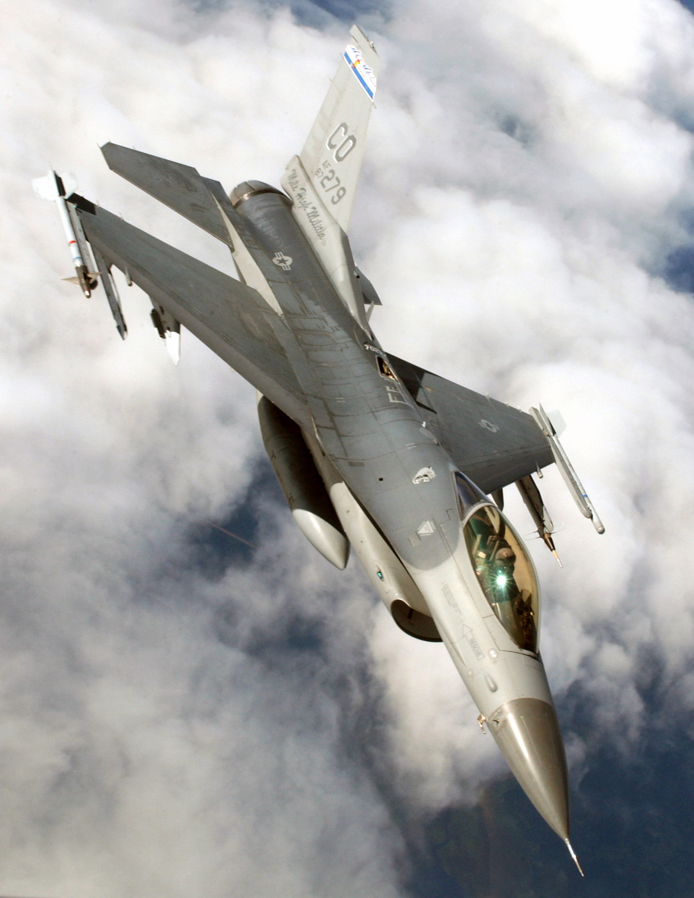
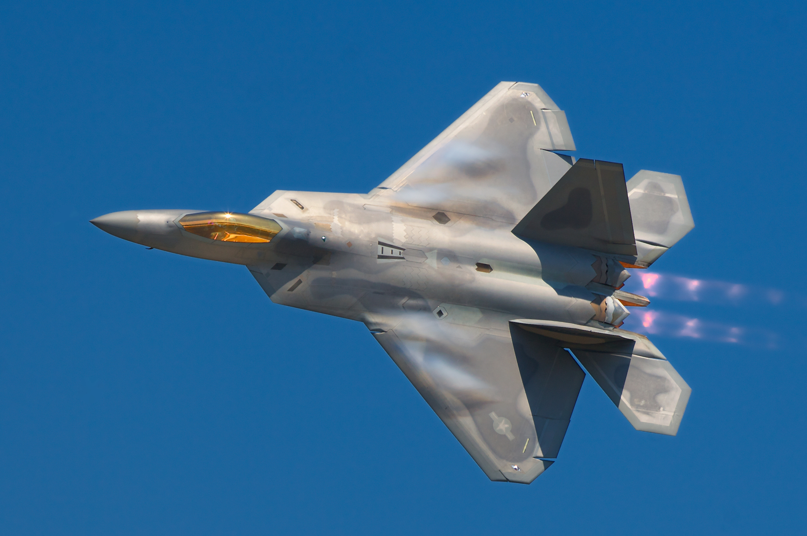
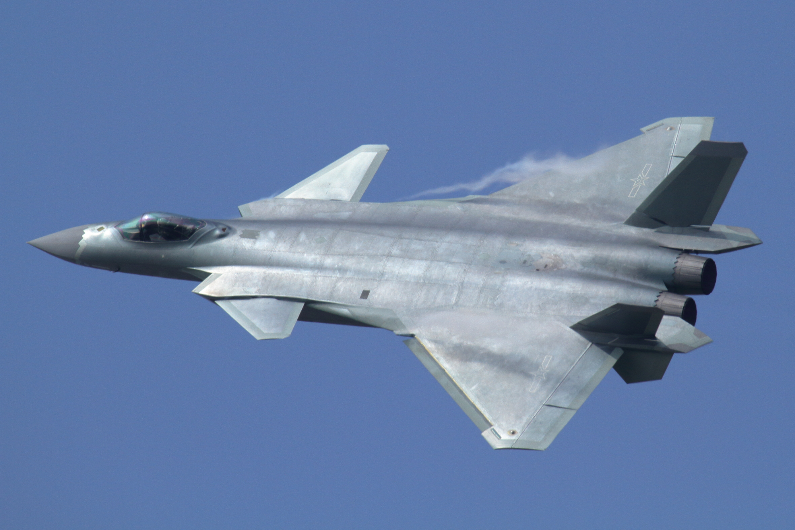

Since World War I, achieving and maintaining air superiority has been considered essential for victory in conventional warfare. Fighters continued to be developed throughout World War I, to deny enemy aircraft and dirigibles the ability to gather information by reconnaissance over the battlefield. Early fighters were very small and lightly armed by later standards, and most were biplanes built with a wooden frame covered with fabric, and a maximum airspeed of about 100 mph (160 km/h). A successful German biplane, the Albatross, however, was built with a plywood shell, rather than fabric, which created a stronger, faster airplane. As control of the airspace over armies became increasingly important, all of the major powers developed fighters to support their military operations. Between the wars, wood was largely replaced in part or whole by metal tubing, and finally aluminum stressed skin structures (monocoque) began to predominate. By World War II, most fighters were all-metal monoplanes armed with batteries of machine guns or cannons and some were capable of speeds approaching 400 mph (640 km/h). Most fighters up to this point had one engine, but a number of twin-engine fighters were built; however they were found to be outmatched against single-engine fighters and were relegated to other tasks, such as night fighters equipped with radar sets. By the end of the war, turbojet engines were replacing piston engines as the means of propulsion, further increasing aircraft speed. Since the weight of the turbojet engine was far less than a piston engine, having two engines was no longer a handicap and one or two were used, depending on requirements. This in turn required the development of ejection seats so the pilot could escape, and G-suits to counter the much greater forces being applied to the pilot during maneuvers. Wings were made thinner and swept back to reduce transonic drag, which required new manufacturing methods to obtain sufficient strength. Skins were no longer sheet metal riveted to a structure, but milled from large slabs of alloy. The sound barrier was broken, and after a few false starts due to required changes in controls, speeds quickly reached Mach 2, past which aircraft cannot maneuver sufficiently to avoid attack. In the 1950s, radar homing missiles were developed, giving fighters the ability to engage aircraft from any aspect (front, sides, or rear), in bad weather, and at longer range. Air-to-air missiles largely replaced guns and rockets in the early 1960s since both were believed unusable at the speeds being attained, however the Vietnam War showed that guns still had a role to play, and most fighters built since then are fitted with cannon (typically between 20 and 30 mm (0.79 and 1.18 in) in caliber) in addition to missiles. Most modern combat aircraft can carry at least a pair of air-to-air missiles. In the 1970s, turbofans replaced turbojets, improving fuel economy enough that the last piston engine support aircraft could be replaced with jets, making multi-role combat aircraft possible. Honeycomb structures began to replace milled structures, and the first composite components began to appear on components subjected to little stress. With the steady improvements in computers, defensive systems have become increasingly efficient. To counter this, stealth technologies have been pursued by the United States, Russia, India and China. The first step was to find ways to reduce the aircraft's reflectivity to radar waves by burying the engines, eliminating sharp corners and diverting any reflections away from the radar sets of opposing forces. Various materials were found to absorb the energy from radar waves, and were incorporated into special finishes that have since found widespread application. Composite structures have become widespread, including major structural components, and have helped to counterbalance the steady increases in aircraft weight—most modern fighters are larger and heavier than World War II medium bombers. Because of the importance of air superiority, since the early days of aerial combat armed forces have constantly competed to develop technologically superior fighters and to deploy these fighters in greater numbers, and fielding a viable fighter fleet consumes a substantial proportion of the defense budgets of modern armed forces.